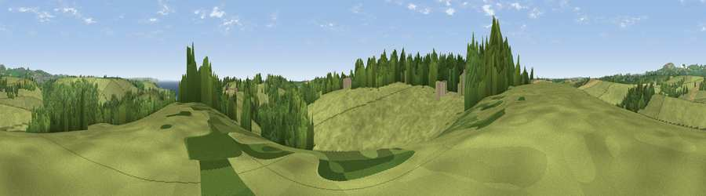

Viewpoint near Pentewan
#25778 in England · top 45% of its area beats it · near PentewanWhere it is
The exact computed spot (SW 99925 47075). Click the marker for map links.
The view, rendered

A 360° render of this exact spot computed from the terrain model, tree cover and land cover — summer colours, afternoon light, calibrated against photographs of famous viewpoints. Real trees, hedges and buildings will differ in detail.
The panorama
Grey silhouette: terrain skyline in each direction (720 bearings, Earth curvature and refraction included). Dashed green: skyline with trees (+15 m) and buildings (+8 m) as obstacles. Blue strip: how far the ground is visible on each bearing.
Where the view opens
Wedge length = distance to the farthest visible ground on that bearing (vegetation-aware). Rings at 10, 25 and 50 km.
What fills the view
66% grassland · 26% woodland · 4% cropland · 3% water ·
Angular shares of the visible panorama (visual magnitude), not map area. Landscape diversity 0.39 (0–1 Shannon).
Key numbers
More beautiful places nearby
The staircase of upgrades: each row has a higher view potential than everything closer. Driving times are estimates from straight-line distance, calibrated against real road routing — check an actual route before setting out.
| Place | Direction | Drive | Score |
|---|---|---|---|
| Viewpoint near Mevagissey | ESE · 2 km | ~6 min | 71.2 |
| Lobb's Shop Hill | NE · 4 km | ~9 min | 72.9 |
| Viewpoint near Pentewan | ENE · 4 km | ~9 min | 74.7 |
| Viewpoint near Gorran Haven | SSE · 5 km | ~11 min | 77.0 |
| Viewpoint near St Austell | N · 7 km | ~14 min | 77.4 |
| Viewpoint near Trewoon | NNW · 7 km | ~14 min | 77.9 |
| Viewpoint near Foxhole | NNW · 7 km | ~14 min | 84.3 |
| Viewpoint near Foxhole | NNW · 8 km | ~16 min | 86.4 |
50.28963, -4.81011 · source: screening · position refined by local search. Computed location — check access rights before visiting.